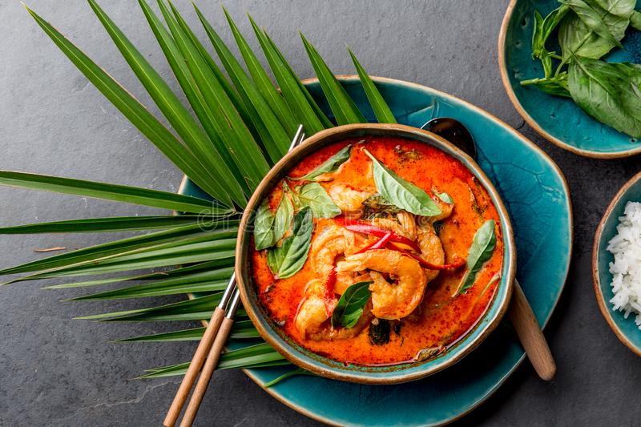

Thai Curry

Description
The Thai red curry is savory, salty, there's natural sweetness from the sweet Vidalia onions, carrots and coconut milk. There's perfect acid balance from lime juice and very gentle heat from the Thai red curry paste.
Ingredients
- Coconut oil
- Sweet Vidalia onion
- Chicken breasts
- Garlic
- Fresh ginger
- Ground Coriander
- Thai red curry paste
- Lime juice
Steps
- Add the oil and chopped onion to a large skillet and sauté until softened.
- Add the diced chicken and cook until done, then add the garlic, ginger, and coriander.
- Coconut milk, carrots, Thai curry paste, salt, and pepper are stirred in next, and then the mixture should be left to bubble away for about 5 minutes.
- Stir in the spinach, lime juice, and optional brown sugar last.
Return to homepage